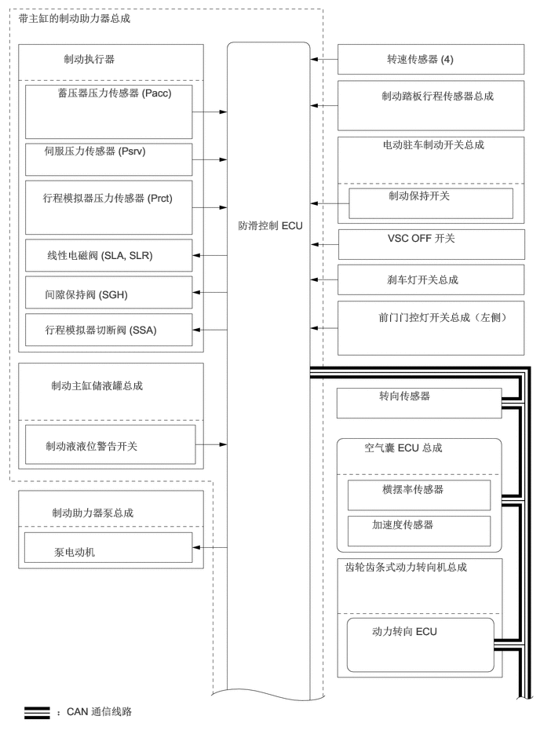

0.24,0.156 3.208,0.51
2.958,0.344
10
false
带主缸的制动助力器总成
0.844,0.698 2.229,1.01
1.375,0.302
10
false
制动执行器
0.76,1.146 2.646,1.677
1.875,0.521
10
false
蓄压器压力传感器 (Pacc)
0.583,1.917 3.219,2.219
2.625,0.292
10
false
伺服压力传感器 (Psrv)
0.563,2.542 2.573,3.01
2,0.458
10
false
行程模拟器压力传感器 (Prct)
0.625,3.302 3,3.604
2.365,0.292
10
false
线性电磁阀 (SLA, SLR)
0.594,3.823 2.146,4.167
1.542,0.333
10
false
间隙保持阀 (SGH)
0.594,4.292 2.781,4.552
2.177,0.25
10
false
行程模拟器切断阀 (SSA)
3.156,2.906 4.573,3.833
1.406,0.917
10
false
防滑控制 ECU
0.677,5.031 2.094,5.448
1.406,0.406
10
false
制动主缸储液罐总成
0.604,5.833 2.854,6.208
2.24,0.365
10
false
制动液液位警告开关
0.688,6.719 2.938,7.094
2.24,0.365
10
false
制动助力器泵总成
0.719,7.24 1.781,7.5
1.052,0.25
10
false
泵电动机
0.75,9.354 2.99,9.635
2.229,0.271
10
false
：CAN 通信线路
5.135,0.698 6.344,0.99
1.198,0.281
10
false
转速传感器 (4)
5.063,1.188 6.99,2.104
1.917,0.906
10
false
制动踏板行程传感器总成
5.073,1.833 6.458,2.292
1.375,0.448
10
false
电动驻车制动开关总成
5.156,2.51 6.542,2.969
1.375,0.448
10
false
制动保持开关
5.146,3.073 6.531,3.531
1.375,0.448
10
false
VSC OFF 开关
5.135,3.625 7,3.99
1.854,0.354
10
false
刹车灯开关总成
5.021,4.125 7.083,4.563
2.052,0.427
10
false
前门门控灯开关总成（左侧）
5.031,5.167 6.229,5.448
1.188,0.271
10
false
转向传感器
4.833,5.854 6.656,6.208
1.813,0.344
10
false
空气囊 ECU 总成
5.073,6.406 6.396,6.719
1.313,0.302
10
false
横摆率传感器
4.938,6.875 6.26,7.188
1.313,0.302
10
false
加速度传感器
4.573,7.438 6.583,7.969
2,0.521
10
false
齿轮齿条式动力转向机总成
4.938,8.292 6.427,8.552
1.479,0.25
10
false
动力转向 ECU